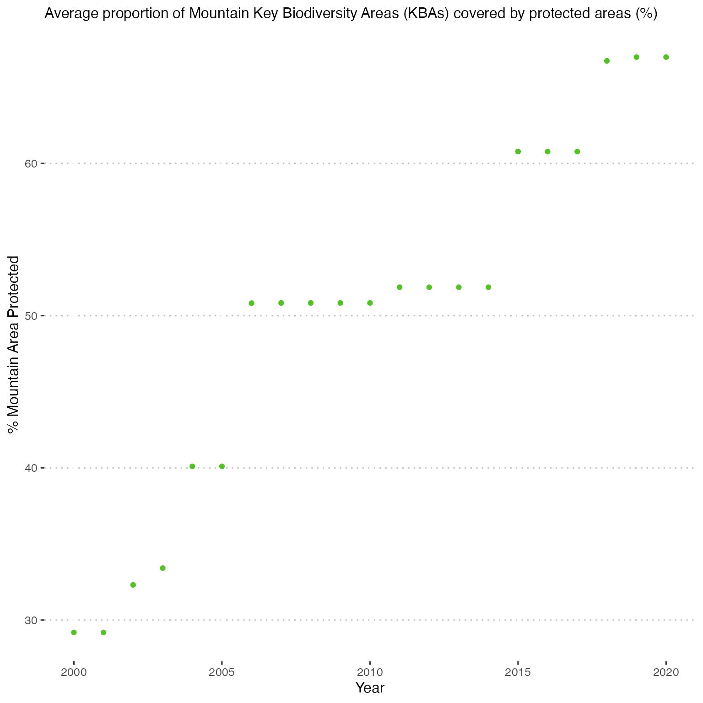

Introduction_to_SDGsR.RmdHere is a basic runthrough of the {SDGsR} workflow. The package interfaces with UN SDGs API (see https://unstats.un.org/SDGAPI/swagger/) and allows the user to get the text of the 17 Goals, each associated Target and Indicators. This post: https://rpubs.com/angelamhkim/sdgapi was the inspiration for this package. Using the SDGsR::get_indicator() function one can get the indicator data for a specific country and indicator.
For a comprehensive explanation of what the SDGs are and how they were developed please see https://www.undp.org/content/undp/en/home/sustainable-development-goals.html
Currently, there are five functions in the package which facilitate interaction with the SDGs API.
To get the text of the Goals we can use the SDGsR::get_SDGs_goals() function. This gathers together all the Goals in to a single dataframe.
library(SDGsR)
Goals<-get_SDGs_goals()
Goals %>% select(goal, code, description ) %>%
sample_n(.,3) %>% #randomly select three rows to display
kableExtra::kable()| goal | code | description |
|---|---|---|
| 5 | 5.c | Adopt and strengthen sound policies and enforceable legislation for the promotion of gender equality and the empowerment of all women and girls at all levels |
| 17 | 17.5 | Adopt and implement investment promotion regimes for least developed countries |
| 9 | 9.a | Facilitate sustainable and resilient infrastructure development in developing countries through enhanced financial, technological and technical support to African countries, least developed countries, landlocked developing countries and small island developing States |
The most useful function is the SDGsR::get_indicator() function that allows the user to query the data for a specific indicator in a specific country. First we need to make sure we know which is the correct code for the country and for the indicator as the API uses these to distinguish which data to export.
head(get_country_list())
#> [1] "Afghanistan" "Åland Islands" "Albania" "Algeria"
#> [5] "American Samoa" "Andorra"To find a specific indicator we need to know the right code to use. We can get a list of all the indicators by using SDGsR::get_indicator_list. I am interested in the indicators that are in Goal 15 Life on Land.
ind_lst<-get_indicator_list()
ind_lst %>%
filter(goal=="15") %>%
select(target, code, description) %>%
kableExtra::kable()| target | code | description |
|---|---|---|
| 15.1 | 15.1.1 | Forest area as a proportion of total land area |
| 15.1 | 15.1.2 | Proportion of important sites for terrestrial and freshwater biodiversity that are covered by protected areas, by ecosystem type |
| 15.2 | 15.2.1 | Progress towards sustainable forest management |
| 15.3 | 15.3.1 | Proportion of land that is degraded over total land area |
| 15.4 | 15.4.1 | Coverage by protected areas of important sites for mountain biodiversity |
| 15.4 | 15.4.2 | Mountain Green Cover Index |
| 15.5 | 15.5.1 | Red List Index |
| 15.6 | 15.6.1 | Number of countries that have adopted legislative, administrative and policy frameworks to ensure fair and equitable sharing of benefits |
| 15.8 | 15.8.1 | Proportion of countries adopting relevant national legislation and adequately resourcing the prevention or control of invasive alien species |
| 15.9 | 15.9.1 |
|
| 15.a | 15.a.1 |
|
| 15.b | 15.b.1 |
|
Let’s look at the indicator for Target 15.4, “15.4.1: Coverage by protected areas of important sites for mountain biodiversity” and we will specify Norway as our country of interest. We know that Norway is named Norway on our country list (which is obvious but some countries are named in different ways to how we might commonly expect, e.g. Vietnam is specified as “Viet Nam”, Venezuela is specified as “Venezuela (Bolivarian Republic of)”).
Norway_code<-lookup_country(code="M49", country = "Norway")
Norway_code
#> [1] 578
Norway<-get_indicator(Country = Norway_code, indicator = "15.4.1")We can then make a plot of this data using the SDGsR::SDGs_colours() function.
p1<-Norway %>%
select(timePeriodStart,value,seriesDescription) %>%
ggplot(aes(timePeriodStart, as.numeric(value)))+
geom_point(colour=SDGs_cols("Goal15"))+
labs(x="Year", y="% Mountain Area Protected")+
ggtitle(label=paste0(Norway$seriesDescription[1])) +
ggpubr::theme_pubclean()+
theme(plot.title = element_text(size = 12))
p1